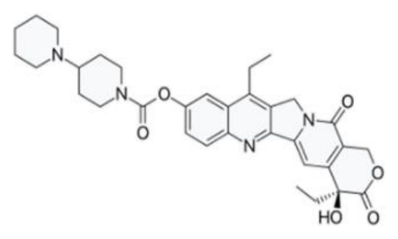
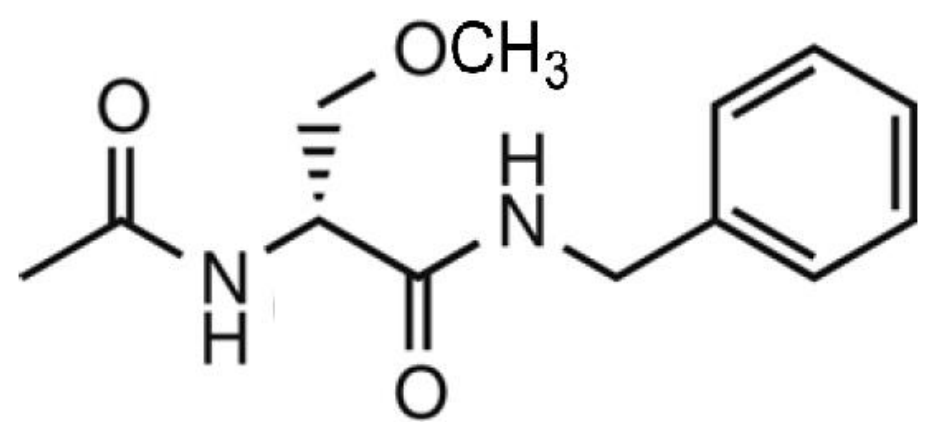
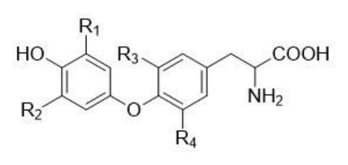
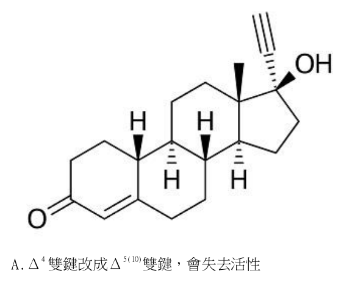
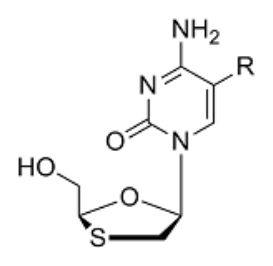

開卷有益 ／
藥師 ／ 藥理學與藥物化學 ／ 114 年第 2 次114 年第 2 次藥師藥理學與藥物化學試題與答案
這一頁是民國 114 年第 2 次藥師藥理學與藥物化學的整份歷屆試題，共 80 題，題目與標準答案出自考選部「國家考試試題及測驗式試題答案」開放資料，其中 73 題附有詳解。以下逐題列出題幹、選項與答案；要計時作答或記錄成績，請用線上練習。
考選部原始場次代碼：114090
線上作答這一科 →
全部 80 題
第 1 題
若一藥物是某受體（receptor）的非競爭性拮抗劑（noncompetitive antagonist），則有關該藥物藥理性質 之敘述，下列何者最適當？
（A） 應會與該受體作用劑（agonist）競爭相同的結合位點，可使該受體作用劑（agonist）的EC50改變（B） 應會與該受體進行不可逆的共價鍵結合（covalent binding），可使該受體作用劑（agonist）的EC50改變（C） 若該藥物屬不可逆拮抗劑，當過量中毒時，可透過增加該受體作用劑（agonist）的劑量而解毒（D） 若該藥物屬不可逆拮抗劑，其作用期間（duration of action）主要取決該受體的代謝速率（turnover rate）答案：（D）
詳解與考點 正解：非競爭性拮抗若是不可逆型，受體一旦被失活，增加作用劑也無法立刻恢復可用受體數目；其效應會持續到新受體生成或舊受體更新。因此（D）所述作用期間主要取決於受體代謝速率（turnover rate）正確，故選 D。
A：（A）與作用劑競爭相同結合位點並改變 EC50，是競爭性拮抗的典型表現，不是非競爭性拮抗的必要特徵。
B：（B）不可逆共價結合只是非競爭性拮抗的一種可能機制，非競爭性拮抗也可經由異位結合產生；而不可逆拮抗的主要改變通常是可達最大效應下降，不宜只用 EC50 改變概括。
C：（C）不可逆拮抗使部分受體失去作用，單純提高作用劑濃度不能克服已失活的受體，與競爭性拮抗可被高濃度作用劑克服不同。
本題考點：非競爭性拮抗（noncompetitive antagonism）——看到最大反應下降且提高作用劑無法克服時，判為非競爭性而非競爭性拮抗；不可逆拮抗（irreversible antagonism）——效應消退要等受體更新，判斷作用時間時看受體 turnover rate。
第 2 題
下列何者為細菌對aminoglycosides 產生抗藥性（resistance）的主要機轉？
（A） 增加藥物的排出（B） 改變藥物的結合位置（C） 誘發藥物代謝酵素的生成（D） 改變葉酸的生合成路徑答案：（C）
詳解與考點 正解：細菌對 aminoglycosides 最典型的抗藥性機轉，是產生能修飾並失活藥物的酵素，使藥物無法有效結合細菌核糖體；（C）所稱誘發藥物代謝酵素生成，對應這類酵素性失活機轉，故選 C。
A：（A）增加藥物排出可見於部分抗菌藥抗藥性，但不是 aminoglycosides 最主要的教科書級機轉。
B：（B）改變核糖體結合位置可以造成抗藥性，但相較於藥物修飾酵素造成的失活，並非本題所問的主要機轉。
D：（D）改變葉酸生合成路徑是抗葉酸類藥物的典型抗藥性方向，與 aminoglycosides 抑制蛋白質合成的作用位置不符。
本題考點：aminoglycoside-modifying enzymes——遇到 aminoglycosides 抗藥性時，優先聯想到細菌以酵素修飾藥物並使其失活；抗菌藥抗藥性機轉——要先把藥物作用位置和抗藥性改變的位置配對，葉酸路徑不適用於核糖體抑制劑。
第 3 題
下列何種藥物最適合用於治療綠膿桿菌（Pseudomonasaeruginosa）所引起的感染？
（A） cefamandole（B） teicoplanin（C） linezolid（D） piperacillin答案：（D）
詳解與考點 正解：綠膿桿菌（Pseudomonas aeruginosa）是革蘭陰性桿菌，治療時須選具抗綠膿桿菌活性的抗生素。piperacillin 屬可涵蓋綠膿桿菌的廣效 penicillin，最符合題意，故選 D。
A：（A）cefamandole 的抗菌譜不以綠膿桿菌為主要涵蓋對象，不能因同為 β-lactam 類而直接選用。
B：（B）teicoplanin 主要針對革蘭陽性菌，無法作為綠膿桿菌感染的適當治療。
C：（C）linezolid 主要用於革蘭陽性菌感染，對革蘭陰性的綠膿桿菌缺乏有效涵蓋。
本題考點：抗綠膿桿菌抗生素（antipseudomonal antibiotics）——看到 Pseudomonas aeruginosa 時，先確認抗菌譜是否涵蓋革蘭陰性綠膿桿菌；β-lactam 抗菌譜——同屬 β-lactam 類不代表抗菌譜相同，須逐一辨認是否具 antipseudomonal 活性。
第 4 題 待校
Leucovorin 常被用於改善下列何種抗癌藥物對於正常組織細胞之毒性？
（A） gemcitabine（B） methotrexate（C） 6-mecaptopurine（D） bleomycin答案：（B）
第 5 題
下列抗癌藥物與其可能產生副作用之配對，何者錯誤？
（A） cyclophosphamide：hemorrhagic cystitis（B） cisplatin：hypotension（C） bleomycin：pulmonary fibrosis（D） doxorubicin：cardiotoxicity答案：（B）
詳解與考點 正解：cisplatin 的重要毒性以腎毒性、耳毒性與周邊神經毒性等為主，hypotension 不是其典型配對副作用；（B）錯誤，故選 B。
A：（A）cyclophosphamide 的代謝物可傷害膀胱黏膜，造成 hemorrhagic cystitis，配對正確。
C：（C）bleomycin 的劑量限制性毒性之一是 pulmonary fibrosis，配對正確。
D：（D）doxorubicin 可造成累積性的 cardiotoxicity，這是臨床上需特別留意的典型毒性。
本題考點：cisplatin toxicity——辨識 cisplatin 時優先連結腎、耳與神經毒性，不把非典型血壓變化當作代表性副作用；抗癌藥特徵性毒性（signature toxicities）——配對題先抓各藥最具鑑別力的器官毒性，而非只看所有可能的不良反應。
第 6 題
癌症免疫療法可透過使用免疫檢查點抑制劑（immune checkpoint inhibitor）抑制T 細胞上之cytotoxic T- lymphocyte-associated antigen 4（CTLA-4）或是阻斷T 細胞上之 programmed death receptor-1（PD-1） 和腫瘤細胞上之PD-ligand-1（PD-L1）結合，進而增強免疫細胞毒殺腫瘤細胞之作用。下列抗癌藥物中，何 者不屬於免疫檢查點抑制劑？
（A） ipilimumab（B） rituximab（C） pembrolizumab（D） atezolizumab答案：（B）
詳解與考點 正解：免疫檢查點抑制劑是解除 T 細胞 CTLA-4 或 PD-1/PD-L1 訊號的煞車，以恢復抗腫瘤免疫反應。rituximab 的標的是 B 細胞表面的 CD20，不屬 CTLA-4 或 PD-1/PD-L1 檢查點抑制劑，故選 B。
A：（A）ipilimumab 為 CTLA-4 抑制劑，屬免疫檢查點抑制劑。
C：（C）pembrolizumab 阻斷 PD-1，屬免疫檢查點抑制劑。
D：（D）atezolizumab 阻斷 PD-L1，屬免疫檢查點抑制劑。
本題考點：免疫檢查點抑制劑（immune checkpoint inhibitor）——從標的判斷，CTLA-4、PD-1 與 PD-L1 對應此類藥物；rituximab——看到 CD20 與 B 細胞標的時，判為 B 細胞導向單株抗體，而非 T 細胞檢查點抑制劑。
第 7 題
下列敘述何者正確？
（A） doxycycline, minocycline 可用於tetracycline 抗藥性菌株，是因為與細菌核糖體之結合力更強（B） clindamycin, chloramphenicol, linezolid 皆會抑制細菌的50S 核糖體功能（C） tetracycline, doxycycline 都必須空腹使用（D） tigecycline 在血清中的半衰期比tetracycline 短答案：（B）
詳解與考點 正解：clindamycin、chloramphenicol 與 linezolid 的共同點是作用於細菌 50S 核糖體，皆可抑制蛋白質合成；（B）正確，故選 B。
A：（A）doxycycline 與 minocycline 對部分 tetracycline 抗藥性菌仍可能保有活性，但不能以「與核糖體結合力更強」作為一概而論的原因；抗藥性機轉不同時，結果也不同。
C：（C）tetracycline 的吸收易受食物與金屬離子影響，常強調空腹使用；doxycycline 的給藥彈性較大，不能說兩者都必須空腹。
D：（D）tigecycline 的血清半衰期並不比 tetracycline 短，兩者的藥動學特性不能只依同屬 tetracycline 類推論。
本題考點：50S 核糖體抑制劑（50S ribosomal inhibitors）——遇到 clindamycin、chloramphenicol 與 linezolid 時，以共同抑制 50S 功能判定；tetracycline 類給藥差異——同類藥物的吸收與半衰期可不同，看到「皆必須」等絕對語句要逐藥比較。
第 8 題
有關抗血小板凝集藥物之機轉，下列敘述何者正確？
（A） vorapaxar 抑制血小板上protease-activated receptor 1（PAR-1）（B） ticagrelor 抑制血小板上glycoprotein IIb/IIIa receptor（C） clopidogrel 抑制血小板phosphodiesterase（PDE）（D） tirofiban 抑制血小板thromboxane A2 的生成答案：（A）
詳解與考點 正解：vorapaxar 是血小板 protease-activated receptor 1（PAR-1）拮抗劑，藉由阻斷 thrombin 相關的血小板活化訊號抑制血小板凝集；（A）正確，故選 A。
B：（B）ticagrelor 抑制的是血小板 P2Y12 受體，不是 glycoprotein IIb/IIIa receptor；兩者都屬抗血小板標的，但作用位置不同。
C：（C）clopidogrel 同樣作用於 P2Y12 受體，phosphodiesterase（PDE）抑制則是另一類提高血小板內 cAMP 的機轉。
D：（D）tirofiban 阻斷 glycoprotein IIb/IIIa receptor，並不抑制 thromboxane A2 的生成；抑制 thromboxane A2 生成是 aspirin 的典型機轉。
本題考點：抗血小板藥物標的（antiplatelet drug targets）——以 PAR-1、P2Y12、glycoprotein IIb/IIIa 與 thromboxane A2 四個標的逐一配藥，不能只依同為抗血小板藥判定；vorapaxar——看到 PAR-1 時直接連結至 vorapaxar，而非 P2Y12 或 glycoprotein IIb/IIIa 抑制劑。
第 9 題
有關鐵劑治療貧血之敘述，下列何者錯誤？
（A） 鐵劑可用於治療低血素小細胞型貧血（microcytic hypochromic anemia）（B） 口服鐵劑使用時會干擾腸胃道出血的判讀（C） 注射deferoxamine 可以治療急性鐵中毒（D） 鐵劑治療貧血的主要藥理機轉為幫助紅血球中葉酸所參與之單碳循環答案：（D）
詳解與考點 正解：鐵劑治療缺鐵性貧血，是提供血紅素合成所需的鐵，不是促進葉酸參與的單碳循環；（D）把鐵與葉酸的造血角色混為一談，故選 D。
A：（A）缺鐵性貧血常呈現 microcytic hypochromic anemia，補充鐵劑可用於此類型貧血。
B：（B）口服鐵劑可使糞便顏色變深，可能干擾腸胃道出血的臨床判讀，因此配對正確。
C：（C）deferoxamine 是鐵螯合劑，注射給藥可用於急性鐵中毒處置。
本題考點：鐵劑治療（iron therapy）——看到小球性低色素性貧血時，先判斷是否為缺鐵並以補鐵處理；造血營養素區分——鐵用於血紅素合成，folate 用於單碳代謝與核酸合成，兩者不可互換；deferoxamine——急性鐵中毒時以鐵螯合作用辨識其用途。
第 10 題
關於recombinant human granulocyte colony-stimulating factor（rHuG-CSF）之臨床應用，下列何者錯 誤？
（A） 可用於治療癌症化療所導致嗜中性白血球缺乏症（chemotherapy-induced neutropenia）（B） 可用於自體幹細胞移植（autologous stem cell transplantation）（C） 與plerixafor 併用以治療多發性骨髓瘤（multiple myeloma）（D） 可單獨用於治療全血球細胞缺乏症（pancytopenia）答案：（D）
詳解與考點 正解：rHuG-CSF 的核心用途是增加嗜中性白血球並動員造血幹細胞。化療後嗜中性白血球缺乏及自體幹細胞移植前皆可使用；與 plerixafor 合用可增進多發性骨髓瘤病人的幹細胞動員。全血球細胞缺乏牽涉紅血球、白血球與血小板多系統缺乏，單靠 rHuG-CSF 無法全面矯正，故選 D。
A：化療造成的嗜中性白血球缺乏可用 rHuG-CSF 縮短嗜中性白血球低下的期間，這正是其常見的支持性治療用途。
B：自體幹細胞移植前需要將造血幹細胞動員至周邊血以利收集，rHuG-CSF 可用於此一流程。
C：plerixafor 與 rHuG-CSF 的組合用於多發性骨髓瘤病人的造血幹細胞動員；它不是直接殺傷骨髓瘤細胞，但仍是移植治療中的適當應用。
本題考點：粒細胞群落刺激因子（granulocyte colony-stimulating factor）——遇到化療後嗜中性白血球缺乏時，判斷其是否能選擇性促進嗜中性白血球恢復；造血幹細胞動員（hematopoietic stem-cell mobilization）——自體移植前看藥物能否將幹細胞動員至周邊血，不能把它等同於矯正所有血球系的缺乏。
第 11 題
下列治療甲狀腺風暴（thyroid storm）藥物中，何者可抑制thyroid peroxidase 而抑制甲狀腺素生合成？
（A） propranolol（B） propylthiouracil（C） iodides（D） glucocorticoids答案：（B）
詳解與考點 正解：甲狀腺風暴中直接抑制甲狀腺素生合成，要找抑制 thyroid peroxidase 的 thionamide。propylthiouracil 可阻斷碘化、碘化酪胺酸偶聯等 thyroid peroxidase 催化步驟，且可抑制周邊 T4 轉為 T3，故選 B。
A：propranolol 以 β-adrenergic receptor 阻斷減輕心悸、顫抖等交感症狀；雖可影響周邊轉換，並不直接抑制 thyroid peroxidase。
C：iodides 急性降低甲狀腺素釋放，使用時須與抑制生合成的藥物區分，作用位置不是 thyroid peroxidase。
D：glucocorticoids 可降低 T4 轉換為 T3 並處理相對腎上腺不足，沒有直接阻斷 thyroid peroxidase。
本題考點：thionamide（antithyroid thionamides）——題目問甲狀腺素生合成時，鎖定 thyroid peroxidase 的碘化與偶聯步驟；甲狀腺風暴的多靶點治療（thyroid storm treatment）——分開判斷抑制合成、抑制釋放、抑制周邊轉換與控制交感症狀的藥物位置。
第 12 題
下列何者為口服降血糖藥物，可作用於sulfonylurea 受體，而增加insulin 釋放？
（A） glyburide（B） metformin（C） liraglutide（D） rosiglitazone答案：（A）
詳解與考點 正解：題幹指定 sulfonylurea 受體與增加 insulin 釋放，對應 sulfonylurea 類的 glyburide。glyburide 結合胰島 β 細胞的 SUR1，使 KATP channel 關閉、細胞去極化並開啟鈣離子通道，因而促進 insulin 釋放，故選 A。
B：metformin 主要降低肝臟糖質新生並改善胰島素敏感性，並非經 SUR1 直接促泌 insulin。
C：liraglutide 是 GLP-1 receptor agonist，能以葡萄糖依賴方式增加 insulin 分泌；分辨關鍵在其作用受體不是 sulfonylurea 受體。
D：rosiglitazone 活化 PPARγ 以改善胰島素敏感性，沒有關閉 β 細胞 KATP channel 的作用。
本題考點：sulfonylurea 類（sulfonylureas）——看到 SUR1 與 insulin 釋放時，判斷是否為關閉 β 細胞 KATP channel 的藥物；降血糖藥作用位置（antidiabetic drug targets）——促進分泌與改善胰島素敏感性是不同策略，須先辨別受體或細胞位置。
第 13 題
下列糖尿病的治療藥物中，何者為glucagon-like polypeptide-1 受體致效劑？
（A） glipizide（B） dapagliflozin（C） semaglutide（D） miglitol答案：（C）
詳解與考點 正解：GLP-1 受體致效劑的辨識重點是 incretin 類藥名與葡萄糖依賴性促進 insulin 分泌。semaglutide 為 GLP-1 receptor agonist，並可降低 glucagon 分泌及延緩胃排空，故選 C。
A：glipizide 是 sulfonylurea，經 SUR1 與 KATP channel 促進 insulin 釋放，不是 incretin 類藥物。
B：dapagliflozin 抑制腎臟 SGLT2，藉尿糖排出降低血糖，作用位置在腎小管而非 GLP-1 receptor。
D：miglitol 抑制腸道 α-glucosidase，延緩醣類吸收；它不模擬 GLP-1 的受體作用。
本題考點：腸泌素療法（incretin therapy）——藥名屬於 -glutide 時，進一步確認其為 GLP-1 receptor agonist 而非其他降血糖類別；降血糖作用部位（sites of glucose lowering）——以胰島、腎臟與腸道三個位置區分促泌、排糖與延緩吸收。
第 14 題
下列bisphosphonates 類藥物中，何者只需要每年靜脈注射5 mg 一次，即可有效治療骨質疏鬆症？
（A） alendronate（B） risedronate（C） zoledronate（D） ibandronate答案：（C）
詳解與考點 正解：題目限定每年一次、靜脈注射 5 mg 的骨質疏鬆症療程，此一給藥型態對應 zoledronate。zoledronate 是高效力 bisphosphonate，可依題述以每年一次靜脈注射 5 mg 治療骨質疏鬆症，故選 C。
A：alendronate 雖同屬 bisphosphonate，但常見治療型態不是題述的每年一次靜脈注射 5 mg。
B：risedronate 也是抑制骨吸收的 bisphosphonate，然而給藥途徑與頻率不符合題述的年度靜脈療程。
D：ibandronate 可用於骨質疏鬆症，但不等同於題述的 zoledronate 年度 5 mg 靜脈注射方案。
本題考點：雙磷酸鹽類（bisphosphonates）——先以抑制骨吸收辨認藥物類別，再用給藥途徑與頻率區分同類藥；骨質疏鬆症給藥方案（osteoporosis dosing regimens）——遇到精確頻率與途徑時，必須將其與藥名一併配對，不能只憑同類機轉作答。
第 15 題
抗心律不整藥物中，鈉離子通道阻斷劑可抑制心肌動作電位零期去極化速度，其抑制程度由大到小排序，何 者正確？
（A） flecainide＞quinidine＞lidocaine（B） lidocaine＞propafenone＞quinidine（C） quinidine＞mexiletine＞propafenone（D） mexiletine＞quinidine＞flecainide答案：（A）
詳解與考點 正解：鈉離子通道阻斷劑對第 0 期上升速率的抑制強度，依 Vaughan Williams 分類為 Class IC > Class IA > Class IB。flecainide 屬 Class IC、quinidine 屬 Class IA、lidocaine 屬 Class IB，故選 A。
B：lidocaine 是 Class IB，對第 0 期上升速率的抑制最弱；propafenone 為 Class IC，應排在 quinidine 之前而非之後。
C：quinidine 的抑制強度介於 Class IC 與 Class IB 之間；（C）把 Class IA 的 quinidine 排在 propafenone 之前，排序方向錯誤。
D：mexiletine 屬 Class IB，應是三者中最弱；flecainide 屬 Class IC，不能排在最後。
本題考點：Class I 抗心律不整藥（Class I antiarrhythmics）——比較第 0 期抑制強度時，用 IC > IA > IB；藥物分類配對（antiarrhythmic drug classification）——先將 flecainide 與 propafenone 歸 IC、quinidine 歸 IA、lidocaine 與 mexiletine 歸 IB，再做排序。
第 16 題
下列抗心律不整藥物中，可能導致心電圖QT interval 延長，引起心律不整副作用之機制為何？
（A） propafenone，抑制鈉離子通道，但會導致INa slow inactivation，產生delayed afterdepolarizations（B） sotalol，拮抗β-adrenergic receptor，產生delayed afterdepolarizations（C） amiodarone，抑制鉀離子通道，尤其是IKr，產生early afterdepolarizations（D） adenosine，拮抗A1 receptor，抑制鉀離子通道，產生early afterdepolarizations答案：（C）
詳解與考點 正解：QT interval 延長與 early afterdepolarizations 的關鍵是第 3 期 IKr 受抑。amiodarone 具 Class III 鉀離子通道阻斷作用，延長再極化與 QT interval，因而增加 early afterdepolarizations，故選 C。
A：propafenone 屬 Class IC 鈉離子通道阻斷劑；（A）所述 INa slow inactivation 不是 IKr 阻斷、QT 延長與 early afterdepolarizations 的機轉。
B：sotalol 可延長 QT interval，但關鍵是鉀離子通道阻斷，不是 β-adrenergic receptor 拮抗造成 delayed afterdepolarizations。
D：adenosine 是 A1 receptor agonist，增加鉀離子導通、減慢房室結傳導；（D）將受體方向與鉀離子作用都寫反了。
本題考點：藥物誘發 QT 延長（drug-induced QT prolongation）——看到 QT 延長時，找抑制 IKr 的第 3 期再極化延長機轉；早期後去極化（early afterdepolarizations）——動作電位延長時才容易發生，須與 delayed afterdepolarizations 分開。
第 17 題
預防治療不穩定型心絞痛（unstable angina）血栓發生之藥物及作用機制，下列何者正確？
（A） 抗血小板藥dipyridamole—抑制phosphodiesterase（B） 抗血小板藥abciximab—抑制glycoprotein IIb/IIIa（C） 非口服抗凝劑dabigatran—抑制thrombin 及Xa 因子（D） 非口服抗凝劑rivaroxaban—抑制Xa 因子答案：（B）
詳解與考點 正解：不穩定型心絞痛的血栓預防要找可阻斷血小板最終聚集步驟的藥物。abciximab 抑制血小板 glycoprotein IIb/IIIa，阻斷 fibrinogen 橋接與血小板聚集，故選 B。
A：dipyridamole 抑制 phosphodiesterase 的機轉本身正確，但它不是不穩定型心絞痛血栓預防的標準選擇；藥理機轉正確不表示題述臨床情境也適用。
C：dabigatran 是口服直接 thrombin inhibitor，並不抑制 Xa factor；（C）同時把給藥途徑與標的寫錯。
D：rivaroxaban 是口服直接 Xa factor inhibitor；（D）把正確的標的配上非口服抗凝劑的錯誤分類，故不能成立。
本題考點：血小板 glycoprotein IIb/IIIa 抑制劑（glycoprotein IIb/IIIa inhibitors）——急性冠心症題目若問阻斷最終血小板聚集，鎖定阻止 fibrinogen 橋接的藥物；直接口服抗凝劑（direct oral anticoagulants）——先分清 thrombin inhibitor 與 Xa factor inhibitor，再核對其口服給藥特性。
第 18 題
下列利尿劑中，何者最不易引發低血鉀副作用？
（A） chlorothiazide（B） furosemide（C） acetazolamide（D） eplerenone答案：（D）
詳解與考點 正解：最不易低血鉀的利尿劑應減少遠端腎元的鉀分泌。eplerenone 拮抗 mineralocorticoid receptor，降低鈉再吸收與鉀排出，屬保鉀利尿劑，因此最不易造成低血鉀，故選 D。
A：chlorothiazide 抑制 distal convoluted tubule 的鈉氯共轉運，增加遠端鈉遞送與鉀分泌，會造成低血鉀。
B：furosemide 在亨利氏環粗上行支增加鈉排出，後續遠端鉀分泌增加，低血鉀是重要不良反應。
C：acetazolamide 造成 HCO3− 排出與遠端鈉遞送增加，仍可能促進鉀流失，並非保鉀選項。
本題考點：保鉀利尿劑（potassium-sparing diuretics）——阻斷 aldosterone 或上皮鈉通道而降低鉀分泌時，優先想到高血鉀而非低血鉀；遠端鈉遞送（distal sodium delivery）——凡是增加送達遠端腎元的鈉，通常會連帶增加鉀排出。
第 19 題
關於acetazolamide 之藥理作用及副作用敘述，何者正確？
（A） 抑制proximal convoluted tubule 之carbonic anhydrase（B） 抑制distal convoluted tubule 之HCO3 - reabsorption（C） 長期治療需補充HCO3 -，但易於腎臟形成calcium chloride crystal（D） 能平衡呼吸性酸中毒，可用於預防高山症答案：（A）
詳解與考點 正解：acetazolamide 的作用位置是 proximal convoluted tubule。它抑制 carbonic anhydrase，減少 HCO3− 再吸收而造成 bicarbonaturia、鹼性尿與代謝性酸中毒，故選 A。
B：HCO3− 再吸收受到抑制的主要位置是 proximal convoluted tubule，不是（B）所述的 distal convoluted tubule。
C：acetazolamide 長期使用受代謝性酸中毒限制，並非例行以 HCO3− 補充；其尿液鹼化相關結石較符合 calcium phosphate，而不是 calcium chloride crystal。
D：acetazolamide 可用於代謝性鹼中毒，預防高山症則藉輕度代謝性酸中毒促進通氣；它不會平衡呼吸性酸中毒。
本題考點：碳酸酐酶抑制劑（carbonic anhydrase inhibitors）——題目提到 HCO3− 流失時，先定位 proximal convoluted tubule 並推導鹼性尿與代謝性酸中毒；高山症預防（acute mountain sickness prophylaxis）——利用輕度代謝性酸中毒促進通氣，不能誤寫成治療呼吸性酸中毒。
第 20 題
Angiotensin converting enzyme 抑制劑禁用於妊娠第二期及第三期之高血壓病人，下列何者並非其主要原 因？
（A） fetal hypotension（B） hypokalemia（C） renal failure（D） fetal malformations答案：（B）
詳解與考點 正解：妊娠第二、三期禁用 Angiotensin converting enzyme 抑制劑的判準，是胎兒腎素－血管張力素系統受抑後的腎灌流與腎臟發育風險。此類藥物降低 aldosterone，傾向造成鉀滯留與高血鉀，不會以低血鉀作為主要禁忌原因，故選 B。
A：胎兒血壓仰賴腎素－血管張力素系統維持，受抑後可能發生 fetal hypotension，屬主要風險之一。
C：胎兒腎灌流下降可導致 renal failure，這是妊娠後期暴露需要避免的重要原因。
D：胎兒腎臟與其他組織的發育可受影響，fetal malformations 屬此類胎兒毒性的描述，並非題目所問的例外。
本題考點：腎素－血管張力素系統抑制劑的胎兒毒性（fetal toxicity of renin-angiotensin system inhibitors）——妊娠後期題目要連結胎兒低血壓、腎損傷與發育風險；Angiotensin converting enzyme 抑制劑的電解質效應（ACE inhibitor electrolyte effects）——aldosterone 下降時判斷為鉀滯留，與低血鉀方向相反。
第 21 題
下列何者是α2 adrenergic agonist，主要用途作為中樞性肌肉鬆弛劑（centrally acting muscle relaxant）？
（A） tizanidine（B） formoterol（C） phenylephrine（D） prazosin答案：（A）
詳解與考點 正解：中樞性肌肉鬆弛劑且為 α2 adrenergic agonist 的組合對應 tizanidine。tizanidine 活化中樞 α2 receptor，降低興奮性神經傳遞以減輕肌肉痙攣，故選 A。
B：formoterol 是長效 β2 adrenergic agonist，主要用於支氣管擴張，受體與用途皆不符。
C：phenylephrine 是 α1 adrenergic agonist，主要造成血管收縮，不是中樞性肌肉鬆弛劑。
D：prazosin 是 α1 adrenergic receptor blocker；（D）與題幹要求的 α2 agonist 在受體方向上相反。
本題考點：中樞性肌肉鬆弛劑（centrally acting muscle relaxants）——題目同時給 α2 agonist 與肌肉痙攣時，鎖定 tizanidine；腎上腺素受體分類（adrenergic receptor pharmacology）——先辨別 α1、α2、β2 的受體，再用血管、支氣管或中樞作用分流選項。
第 22 題
下列何者是間接作用型擬交感神經作用劑（indirect-acting sympathomimetics）modafinil 之臨床用途？
（A） 氣喘（asthma）（B） 猝睡症（narcolepsy）（C） 休克（shock）（D） 偏頭痛（migraine）答案：（B）
詳解與考點 正解：modafinil 是促進清醒的中樞刺激藥，臨床上用於猝睡症。題幹雖以間接作用型擬交感神經作用劑描述，其用途判斷仍以改善過度日間嗜睡為核心，故選 B。
A：氣喘需要支氣管擴張或控制氣道發炎的藥物；modafinil 沒有治療氣道阻塞的用途。
C：休克的處置目標是維持血壓與器官灌流，需依病因選擇血管升壓或強心藥，modafinil 不作此用途。
D：偏頭痛治療著重急性止痛、血管活性路徑或預防性神經調節，與促醒作用沒有對應關係。
本題考點：modafinil（wakefulness-promoting agent）——看到日間嗜睡或猝睡症時，判斷其促進清醒的適應症；間接作用型擬交感神經作用劑（indirect-acting sympathomimetics）——分類可提示中樞刺激效應，但作答時仍須把藥物與特定臨床用途配對。
第 23 題
下列何者為β1 adrenergic agonist，具有強心作用，可用於治療心因性休克（cardiogenic shock）病人？
（A） dobutamine（B） isoproterenol（C） metaproterenol（D） metoprolol答案：（A）
詳解與考點 正解：心因性休克需要提升心輸出量，題幹指定 β1 adrenergic agonist 與強心作用，對應 dobutamine。dobutamine 以 β1 receptor 為主增加心肌收縮力，可用於心因性休克的強心支持，故選 A。
B：isoproterenol 同時活化 β1 與 β2 receptor，並非選擇性 β1 agonist；其明顯心跳加快與血管作用也不等同題述選擇。
C：metaproterenol 以 β2 receptor 作用為主，較符合支氣管擴張用途而非 β1 強心。
D：metoprolol 是選擇性 β1 adrenergic receptor blocker，會降低心收縮力，與休克時所需的強心方向相反。
本題考點：β1 adrenergic agonist（β1 adrenergic agonists）——心因性休克題目若要求強心，辨認以增加收縮力為主的 dobutamine；腎上腺素受體選擇性（adrenergic receptor selectivity）——區分 β1 強心、β2 支氣管擴張與 β blocker 的相反心血管效應。
第 24 題
下列藥物中，何者屬於選擇性β1 adrenergic receptor blocker，且不具局部麻醉作用？
（A） nebivolol（B） nadolol（C） propranolol（D） sotalol答案：（A）
詳解與考點 正解：本題要同時符合選擇性 β1 adrenergic receptor blocker 與不具局部麻醉作用兩個條件。nebivolol 為選擇性 β1 blocker，且不具 membrane-stabilizing activity，故選 A。
B：nadolol 是非選擇性 β blocker；即使沒有局部麻醉作用，也不符合 β1 選擇性。
C：propranolol 是非選擇性 β blocker，且具有 membrane-stabilizing activity，兩項判準都不符。
D：sotalol 兼具非選擇性 β 阻斷與 Class III 鉀離子通道阻斷作用，不是選擇性 β1 blocker。
本題考點：β blocker 選擇性（beta-blocker selectivity）——題目限定 β1 選擇性時，先排除同時阻斷 β1、β2 的藥物；膜穩定作用（membrane-stabilizing activity）——局部麻醉樣效應是部分 β blocker 的附加性質，必須與受體選擇性分開核對。
第 25 題
下列何者屬於乙醯膽鹼釋放調控劑（acetylcholine release modulator），可用於治療藍伯－伊頓肌無力症 候群（Lambert-Eaton myasthenic syndrome）？
（A） amifampridine（B） atropine（C） echothiophate（D） bethanechol答案：（A）
詳解與考點 正解：藍伯－伊頓肌無力症候群的治療需增加神經肌肉接頭前突觸的 acetylcholine 釋放。amifampridine 阻斷前突觸電壓依賴性鉀離子通道，使動作電位延長、鈣離子內流增加，因而增加 acetylcholine 釋放，故選 A。
B：atropine 是 muscarinic receptor antagonist，作用在乙醯膽鹼的受體端，不會增加前突觸釋放。
C：echothiophate 是不可逆 acetylcholinesterase inhibitor，延長突觸間 acetylcholine 的存在時間；它與調控釋放量的機轉不同。
D：bethanechol 是直接 muscarinic receptor agonist，模擬乙醯膽鹼作用，並非促進其前突觸釋放。
本題考點：藍伯－伊頓肌無力症候群（Lambert-Eaton myasthenic syndrome）——需增加前突觸 acetylcholine 釋放時，找延長動作電位並增加鈣離子內流的 amifampridine；膽鹼性藥物的作用位置（cholinergic drug targets）——釋放調控、acetylcholinesterase 抑制與 muscarinic receptor 作用必須分開辨認。
第 26 題
下列氣喘用藥中，何者雖沒有直接支氣管擴張作用，但有穩定肥大細胞（mast cell stabilizer）之作用？
（A） ipratropium（B） albuterol（C） zileuton（D） nedocromil答案：（D）
詳解與考點 正解：題幹要求沒有直接支氣管擴張作用、但可穩定肥大細胞的氣喘藥。nedocromil 可抑制肥大細胞釋放發炎介質，作為預防性抗發炎治療，並非急性直接支氣管擴張劑，故選 D。
A：ipratropium 阻斷氣道 muscarinic receptor，直接減少迷走神經性支氣管收縮，具有支氣管擴張作用。
B：albuterol 活化 β2 adrenergic receptor，能快速直接鬆弛支氣管平滑肌，不是肥大細胞穩定劑。
C：zileuton 抑制 5-lipoxygenase 以減少 leukotriene 生成；它是白三烯路徑抑制劑，作用點不是穩定肥大細胞。
本題考點：肥大細胞穩定劑（mast cell stabilizers）——題目同時出現預防性抗發炎與無直接支氣管擴張時，辨認 nedocromil；氣喘藥的急性與預防作用（asthma pharmacotherapy）——β2 agonist 與 antimuscarinic 藥可直接擴張支氣管，介質抑制則著重預防。
第 27 題
下列何者不是metoclopramide 可能引起的不良反應？
（A） 便秘（B） 乳漏、男性女乳症和勃起功能障礙（C） 錐體外症候群（extrapyramidal adverse reactions）（D） 困倦和焦慮答案：（A）
詳解與考點 正解：metoclopramide 阻斷 D2 receptor 並促進上消化道蠕動，因此較常出現腹瀉而不是便秘。其 D2 receptor 阻斷亦可造成高泌乳素血症與錐體外症候群，故選 A。
B：dopamine 對泌乳素分泌有抑制作用，metoclopramide 阻斷 D2 receptor 後可出現乳漏、男性女乳症與性功能障礙。
C：中樞 D2 receptor 阻斷可能造成急性肌張力不全、類帕金森症或其他錐體外症候群，屬重要不良反應。
D：困倦、焦慮與不安可見於 metoclopramide 的中樞神經不良反應，與其穿越中樞後的 dopamine 阻斷相關。
本題考點：metoclopramide（dopamine D2 receptor antagonist）——遇到促腸胃蠕動與止吐效果時，連結 D2 receptor 阻斷及腹瀉傾向；高泌乳素血症與錐體外症候群（hyperprolactinemia and extrapyramidal adverse reactions）——中樞或腦下垂體 dopamine 阻斷時，從泌乳素上升與運動副作用推論。
第 28 題
下列5-HT 受體中，何者不是G 蛋白偶聯受體（G protein-coupled receptor）？
（A） 5-HT1 受體（B） 5-HT2 受體（C） 5-HT3 受體（D） 5-HT4 受體答案：（C）
詳解與考點 正解：多數 5-HT receptor 是 G protein-coupled receptor，唯一例外是 5-HT3。5-HT3 為配體門控陽離子通道，訊號傳遞不是經 G protein，因此故選 C。
A：5-HT1 receptor 是 G protein-coupled receptor，常與 Gi 訊號耦聯，不是離子通道。
B：5-HT2 receptor 也是 G protein-coupled receptor，與 5-HT3 的快速離子通道型態不同。
D：5-HT4 receptor 屬 G protein-coupled receptor；分辨關鍵在受體編號不是全部相同，而是 5-HT3 為唯一結構例外。
本題考點：5-HT receptor 家族（5-hydroxytryptamine receptors）——遇到「不是 G protein-coupled receptor」時，直接鎖定 5-HT3；配體門控離子通道（ligand-gated ion channels）——其快速離子流訊號要與經第二訊使的 G protein-coupled receptor 分開判斷。
第 29 題
下列關於acetaminophen 毒性之敘述，何者錯誤？
（A） 單次口服15 克以上可能致命（B） 藥物中毒時的解毒劑為維生素C（C） 可能引起肝毒性（D） 可能加重NSAID 藥物對胃腸道的毒性本題送分，無標準答案
詳解與考點 本題經考選部公告一律給分。acetaminophen中毒之標準解毒劑為N-acetylcysteine（NAC），並非(B)所稱維生素C，此為明確錯誤應可獨立成立為答案；惟(A)「單次口服15克以上可能致命」之劑量門檻，各教材所載致死劑量（常見引述為10-15克或以上）寬嚴不一，致(A)是否亦屬「錯誤」而與(B)並列出現爭議。(C)可能引起肝毒性、(D)可能加重NSAID腸胃道毒性，皆與教材相符可先排除。作答以現行藥理學教材acetaminophen毒理學為準。
第 30 題
Dantrolene 是臨床常用之骨骼肌鬆弛劑，下列有關該藥的敘述何者錯誤？
（A） 口服無法吸收，只能靜脈注射給藥（B） 其作用機制為干擾肌漿網內鈣離子的釋放（C） 可治療麻醉劑引起的惡性高熱（malignant hyperthermia）（D） 可能會引起肝炎（hepatitis）等副作用答案：（A）
詳解與考點 正解：關鍵在 dantrolene 並非只能經靜脈注射。它可口服用於慢性痙攣狀態，靜脈注射則用於惡性高熱的急救；因此（A）把口服吸收與給藥途徑全盤否定，敘述錯誤，故選 A。
B：dantrolene 直接作用於骨骼肌的 ryanodine receptor，抑制肌漿網釋放鈣離子，降低興奮－收縮耦合，這是正確敘述。
C：惡性高熱時骨骼肌內鈣離子異常大量釋放，dantrolene 可抑制此一過程，所以可作為治療用藥。
D：dantrolene 可能造成肝毒性，包括肝炎，長期口服時尤其須留意肝功能，敘述正確。
本題考點：dantrolene（direct-acting skeletal muscle relaxant）——看到惡性高熱與骨骼肌鈣離子大量釋放時，判斷其以抑制肌漿網 ryanodine receptor 為主；惡性高熱（malignant hyperthermia）——麻醉誘發的高代謝危象要切斷肌肉鈣離子釋放，不以中樞鎮靜取代。
第 31 題
下列抗憂鬱藥物（antidepressants）中，何者屬於選擇性血清素回收抑制劑（selective serotonin reuptake inhibitor）？
（A） mirtazapine（B） fluoxetine（C） trazodone（D） duloxetine答案：（B）
詳解與考點 正解：判準是單胺回收抑制的選擇性。fluoxetine 主要抑制 serotonin transporter，使突觸間 serotonin 增加，屬選擇性血清素回收抑制劑，故選 B。
A：mirtazapine 主要拮抗中樞 α2 受體並阻斷部分 serotonin 受體，不是以選擇性抑制 serotonin 回收分類。
C：trazodone 兼具 serotonin 受體拮抗與回收抑制作用，屬 serotonin antagonist and reuptake inhibitor，和單純 SSRI 不同。
D：duloxetine 同時抑制 serotonin 與 norepinephrine 回收，屬 serotonin-norepinephrine reuptake inhibitor。看似同樣提高 serotonin，但不具本題所問的選擇性。
本題考點：選擇性血清素回收抑制劑（selective serotonin reuptake inhibitor，SSRI）——只問 SSRI 時，找主要抑制 serotonin transporter 的藥物；雙重回收抑制劑（serotonin-norepinephrine reuptake inhibitor，SNRI）——看到 serotonin 與 norepinephrine 同時增加時，判為 SNRI。
第 32 題
下列藥物中，何者作用於中樞神經菸鹼性受體，可透過阻斷尼古丁（nicotine）所引起的多巴胺釋放而作為 戒菸用藥？
（A） bupropion（B） rimonabant（C） varenicline（D） nortriptyline答案：（C）
詳解與考點 正解：題幹指定中樞菸鹼性受體與阻斷 nicotine 誘發的 dopamine 釋放。varenicline 是 α4β2 nicotinic acetylcholine receptor 的部分致效劑；它可減輕戒斷，也會競爭受體而削弱 nicotine 的獎賞效果，故選 C。
A：bupropion 主要歸類為 norepinephrine-dopamine reuptake inhibitor，也可影響菸鹼性受體，但不是本題所述 α4β2 部分致效劑。
B：rimonabant 作用於 cannabinoid CB1 receptor，並非以中樞菸鹼性受體阻斷 nicotine 誘發的 dopamine 釋放。
D：nortriptyline 是三環抗憂鬱劑，主要抑制 norepinephrine 回收；其受體標的與題幹所述的菸鹼性受體不符。
本題考點：varenicline（partial agonist at α4β2 nicotinic acetylcholine receptor）——戒菸題同時出現減輕戒斷與阻斷 nicotine 獎賞時，判為部分致效劑；bupropion（norepinephrine-dopamine reuptake inhibitor）——看到提升 norepinephrine 與 dopamine 時，和菸鹼性受體部分致效劑分開。
第 33 題
關於鎮靜安眠藥zolpidem 的特性，下列何者正確？
（A） 藥理作用標的是GABAA 受體（B） 解毒劑為flurazepam（C） 會被氧化成具有活性代謝產物（D） 其代謝酵素是aldehyde dehydrogenase答案：（A）
詳解與考點 正解：zolpidem 的催眠作用來自 GABAA 受體上的 benzodiazepine 結合位，且偏向含 α1 次單元的受體，因此（A）正確，故選 A。
B：zolpidem 過量時可用的受體拮抗劑是 flumazenil；flurazepam 本身是 benzodiazepine 類鎮靜安眠藥，不是解毒劑。
C：zolpidem 經肝臟氧化代謝後主要形成無活性代謝物，不應把氧化代謝直接推成具有活性代謝產物。
D：zolpidem 的氧化代謝主要涉及 cytochrome P450 酵素，而非 aldehyde dehydrogenase。
本題考點：非 benzodiazepine 類催眠藥（nonbenzodiazepine hypnotics）——看到 zolpidem 時，依其作用於 GABAA-benzodiazepine receptor complex 判斷，而不是依名稱排除 GABAA 受體；flumazenil（benzodiazepine receptor antagonist）——需要逆轉 benzodiazepine 結合位相關鎮靜時，找受體拮抗劑而非另一種安眠藥。
第 34 題
下列那一種抗癲癇藥物，其化學結構與GABA 類似，對於局部性癲癇（focal seizures）的治療，具有不錯的 效果？
（A） topiramate（B） gabapentin（C） felbamate（D） tiagabine答案：（B）
詳解與考點 正解：題幹把「與 GABA 結構類似」和局部性癲癇的治療效果放在一起，指的是 gabapentin。gabapentin 為 GABA 類似物，雖不直接作為 GABAA 受體致效劑，仍用於局部性癲癇，故選 B。
A：topiramate 是具多重機轉的抗癲癇藥，包括調節離子通道與增強 GABA 相關抑制；它不是本題所指的 GABA 結構類似物。
C：felbamate 為 dicarbamate 類藥物，主要以 glutamate 與 GABA 傳遞的調節來理解，化學結構分類不符合題幹線索。
D：tiagabine 以抑制 GABA transporter-1、減少 GABA 回收為主要機轉。它同樣增強 GABAergic 傳遞，容易與 gabapentin 混淆，但分辨關鍵在一者是 GABA 類似物、一者是回收抑制劑。
本題考點：gabapentin（GABA analogue）——題目以結構類似 GABA 作為線索時，先辨認 GABA 類似物，再區分其實際受體外機轉；tiagabine（GABA transporter-1 inhibitor）——看到延長突觸 GABA 作用時，判斷是否為抑制回收而非直接致效。
第 35 題
下列那一種藥物不適於治療躁鬱症（bipolar affective disorder）？
（A） lithium carbonate（B） valproic acid（C） phenytoin（D） carbamazepine答案：（C）
詳解與考點 正解：躁鬱症的藥物治療需要情緒穩定作用。phenytoin 的主要適應症是癲癇發作，並不作為躁期或維持期的標準情緒穩定劑，故選 C。
A：lithium carbonate 是典型情緒穩定劑，可用於躁期治療與復發預防，適合躁鬱症的治療目標。
B：valproic acid 兼具抗癲癇與情緒穩定效果，臨床上可用於躁期，敘述所指的疾病適應性正確。
D：carbamazepine 亦有情緒穩定作用，可作為躁鬱症的治療選項，不能因其同時是抗癲癇藥而排除。
本題考點：情緒穩定劑（mood stabilizers）——躁鬱症題先找能處理躁期或降低情緒循環的藥物，不以所有抗癲癇藥一概類推；phenytoin（antiseizure medication）——看到主要控制局部性或全身性癲癇時，不能據此推論具躁鬱症治療效果。
第 36 題
一位50 歲的男性躁鬱症患者，同時具有腎絲球腎炎（glomerulonephritis）的病史。因其躁鬱症非常嚴重需 要接受藥物的治療，下列那一種藥物最適合其使用？
（A） imipramine（B） carbamazepine（C） lithium carbonate（D） buspirone答案：（B）
詳解與考點 正解：關鍵是嚴重躁鬱症合併腎絲球腎炎病史。lithium 主要由腎臟排除，腎功能受損時容易累積並增加毒性風險；carbamazepine 具有情緒穩定作用且不以腎臟排除為主，因此在題設選項中較適合，故選 B。
A：imipramine 是三環抗憂鬱劑，不能取代躁鬱症所需的情緒穩定治療，且抗憂鬱治療可能使情緒轉為躁期。
C：lithium carbonate 雖是情緒穩定劑，但題幹特別提供腎臟病史，正是要排除其腎臟排除與累積毒性的風險。
D：buspirone 為抗焦慮藥，適用目標是焦慮症狀，並無足以控制嚴重躁鬱症的情緒穩定效果。
本題考點：lithium（renal elimination）——情緒穩定劑選擇遇到腎功能問題時，先檢查是否主要經腎臟排除與是否會累積；carbamazepine（mood stabilizer）——躁期需要替代 lithium 時，判斷候選藥是否同時具有抗躁與情緒穩定作用。
第 37 題
下列那一種抗癲癇藥物不適用於失神性小發作（absence seizures）？
（A） ethosuximide（B） phenytoin（C） lamotrigine（D） valproic acid答案：（B）
詳解與考點 正解：失神性小發作的典型治療要能抑制與其相關的 thalamic T-type calcium channel 活性。phenytoin 主要用於其他類型的癲癇，對失神發作無效且可能使其惡化，故選 B。
A：ethosuximide 是典型失神性發作的首選藥物，主要抑制 thalamic T-type calcium channel，敘述所指適用性正確。
C：lamotrigine 可作為失神性發作的治療選項之一，不能以其常用於其他癲癇類型就排除。
D：valproic acid 對多種發作型態有效，包含失神性發作；當需要涵蓋不只一種發作型態時尤其具有意義。
本題考點：失神性發作（absence seizures）——看到短暫意識中斷的典型失神題型時，優先連結 ethosuximide 或 valproic acid，而非 phenytoin；T 型鈣離子通道（T-type calcium channel）——題幹指定失神發作時，將 thalamic T-type channel 視為機轉辨識點。
第 38 題
下列何種天然物或中草藥成分可藉由抑制serotonin reuptake，有助於憂鬱症患者的病情改善？
（A） St. John's wort（B） yohimbe bark（C） taxol（D） resveratrol答案：（A）
詳解與考點 正解：本題問的是可抑制 serotonin reuptake、與憂鬱症改善相關的天然物。St. John's wort 含有的成分可影響 serotonin 等單胺類神經傳遞物的回收，因此符合題幹所述機轉，故選 A。
B：yohimbe bark 的代表性作用是拮抗 α2 adrenergic receptor，與 serotonin 回收抑制不是同一機轉。
C：taxol 的主要藥理作用是穩定 microtubules、抑制細胞分裂，屬抗腫瘤藥物，與抗憂鬱的單胺回收機轉無關。
D：resveratrol 常以多酚與抗氧化相關作用討論，並非本題所問的 serotonin reuptake inhibitor。
本題考點：St. John's wort（herbal antidepressant）——天然物題若同時出現憂鬱症與 serotonin 回收抑制，連結 St. John's wort；單胺類回收抑制（monoamine reuptake inhibition）——先確認藥物是否直接影響 serotonin transporter，再與受體拮抗或抗氧化作用區分。
第 39 題
許多中草藥都具有抗血小板（anti-platelet）的藥理活性，但不包括下列何者？
（A） ginseng（B） milk thistle（C） garlic（D） ginkgo答案：（B）
詳解與考點 正解：題目要找不列入常見抗血小板天然物的一項。milk thistle 主要以 silymarin 的保肝與抗氧化相關用途聞名，並非本題所列典型以抗血小板活性著稱的草藥，故選 B。
A：ginseng 的成分可影響血小板活化與聚集，因此常被列入可能影響止血的草藥。
C：garlic 具有抑制血小板聚集的相關活性，是草藥與抗凝血或抗血小板藥併用時常需辨識的例子。
D：ginkgo 可影響血小板活化因子與血小板聚集，也常列為可能增加出血傾向的草藥。
本題考點：草藥－止血交互作用（herb-hemostasis interaction）——詢問出血風險時，先辨認會抑制血小板聚集的 ginseng、garlic 與 ginkgo；milk thistle（Silybum marianum）——看到 silymarin 時，優先連結保肝與抗氧化用途，不直接歸為典型抗血小板草藥。
第 40 題
下列有關liposome-DNA 載體系統做基因轉殖（gene transfer）之敘述，何者錯誤？
（A） 不容易生產（difficult production）（B） 低轉殖效率（low efficiency）（C） 短時間表達（transient expression）（D） 較不易產生免疫反應（low immune reaction）答案：（A）
詳解與考點 正解：liposome-DNA 是非病毒載體，優點之一正是製備相對簡便。它的限制通常是轉殖效率較低、表現時間較短；相較病毒載體，免疫反應也較低，因此（A）說不容易生產為錯誤敘述，故選 A。
B：非病毒 liposome-DNA 載體的轉殖效率通常低於許多病毒載體，這是其常見限制，敘述正確。
C：liposome-DNA 導入的基因多為短暫表現，較難穩定整合並長期表現，敘述正確。
D：liposome-DNA 不含病毒蛋白，通常較不易引發強烈免疫反應，這是其相對優點。
本題考點：脂質體基因轉殖（liposome-mediated gene transfer）——比較非病毒與病毒載體時，將製備容易、免疫反應較低列為前者優點；轉殖效率與表現持續性（transfection efficiency and transient expression）——看到 liposome-DNA 時，預期效率與長期表現通常較受限。
第 41 題 待校
下列抗體偶聯藥物（ADC）的連接子（linker），何者為glutathione-sensitive？
答案：（A）
第 42 題
化療藥物irinotecan（結構如下圖）屬前驅藥（prodrug），體內代謝的活性成分為SN-38，其被設計成前驅 藥的主要目的為何？

（A） 增加水溶性（B） 增加脂溶性（C） 增加選擇性，降低副作用（D） 增加細胞毒殺作用答案：（A）
詳解與考點 正解：圖中結構在喜樹鹼（camptothecin）母核的酚羥基位置，接上一個雙哌啶（bipiperidino）胺基甲酸酯側鏈，這正是 irinotecan 的特徵基團。母體活性代謝物 SN-38 帶游離酚羥基，親脂性高而水中溶解度差，臨床上難以配製成注射液；接上這段帶鹼性胺基的胺基甲酸酯後，該胺基在生理酸鹼值下可質子化成親水性的銨鹽形式，使整個分子的水溶性大幅提升，得以配製成靜脈注射劑，再由 carboxylesterase 於體內水解釋出 SN-38 發揮細胞毒性，故選 A。
B：若目的是增加脂溶性，反而會讓水中溶解度更差、更不利於配製成注射劑，與臨床選擇這個側鏈的實際考量相反。
C：雙哌啶側鏈影響的是水溶性與藥物動力學，並不改變 SN-38 本身對 topoisomerase I 的作用位置或機轉，選擇性與副作用的改善不是這個修飾的設計初衷。
D：irinotecan 本身是無活性或低活性的前驅藥，真正的細胞毒殺作用來自水解後釋出的 SN-38，前驅藥設計的目的不是強化毒殺力，而是解決水溶性與給藥的問題。
本題考點：前驅藥設計（prodrug design）——當活性分子親脂性過高、水溶性不足以配製注射劑時，接上可離子化的側鏈是常見解法；irinotecan/SN-38——雙哌啶胺基甲酸酯側鏈經 carboxylesterase 水解才釋出活性代謝物，這一步同時決定藥物的溶解度與活化時機。
第 43 題
依據疫苗的種類區分，市售13 價肺炎鏈球菌疫苗屬於下列那一類？
（A） 活疫苗（live vaccine）（B） 次單元疫苗（subunit vaccine）（C） mRNA 疫苗（D） 結合型疫苗（conjugate vaccine）答案：（D）
詳解與考點 正解：13 價肺炎鏈球菌疫苗以多種莢膜多醣與載體蛋白結合，使多醣抗原能引發較佳的 T-cell dependent immune response；此種設計屬結合型疫苗，故選 D。
A：活疫苗含有可在宿主內有限複製的減毒病原體；肺炎鏈球菌結合型疫苗不含此類活的減毒菌。
B：次單元疫苗是較廣的抗原組成概念，但本題依疫苗設計作精確分類時，重點在多醣與載體蛋白的共價結合，應判為 conjugate vaccine。
C：mRNA 疫苗以核酸遞送細胞自行表現抗原；肺炎鏈球菌 13 價疫苗提供的是多醣－蛋白結合抗原，並非 mRNA 平台。
本題考點：結合型疫苗（conjugate vaccine）——看到細菌莢膜多醣連接載體蛋白時，直接判為結合型疫苗；T 細胞依賴性免疫反應（T-cell dependent immune response）——多醣抗原加上載體蛋白的目的，是讓原本較弱的多醣免疫反應獲得 T 細胞協助。
第 44 題 待校
Nusinersen 結構中，含有下列何種已修飾的鹼基（modified base）？
答案：（B）
第 45 題
下列有機酸，何者pKa 值介於4～5？
（A） phenol（B） sulfonic acid（C） sulfonimide（D） arylcarboxylic acid答案：（D）
詳解與考點 正解：判斷 pKa 時要看去質子化後的共軛鹼是否受共振穩定。arylcarboxylic acid 形成的 carboxylate 可把負電荷離域到兩個氧原子，典型 pKa 落在 4～5 的範圍，故選 D。
A：phenol 去質子化後雖可形成 phenoxide，但酸性明顯弱於 arylcarboxylic acid，典型 pKa 不在本題區間。
B：sulfonic acid 的共軛鹼高度穩定，酸性遠強於羧酸，其 pKa 遠低於 4～5。
C：sulfonimide 的酸性受兩側取代基影響，並非本題所問 arylcarboxylic acid 的典型 pKa 範圍；分辨時應以官能基的代表性酸度判斷。
本題考點：羧酸酸度（carboxylic acid acidity）——看到 carboxylate 可在兩個氧原子離域時，預期 pKa 約在弱酸的 4～5 區間；共振穩定（resonance stabilization）——比較酸性時，以去質子化後共軛鹼的穩定度判斷，而非只看是否含有芳香環。
第 46 題
人體若缺乏下列何種代謝能力，則在使用irinotecan 後，易造成嚴重嗜中性白血球缺乏症？
（A） glucuronidation（B） sulfate conjugation（C） acetylation（D） hydrolysis答案：（A）
詳解與考點 正解：irinotecan 先經 hydrolysis 形成具細胞毒性的 SN-38，接著要靠 UGT1A1 進行 glucuronidation 形成較易排除的代謝物。缺乏 glucuronidation 時 SN-38 易累積，骨髓抑制加劇而造成嚴重嗜中性白血球缺乏症，故選 A。
B：sulfate conjugation 不是 SN-38 的主要去活化排除途徑，不能解釋本題所指的典型毒性累積。
C：acetylation 常見於含胺基化合物的代謝，但不是 irinotecan 活性代謝物 SN-38 的關鍵清除反應。
D：hydrolysis 在此反而參與 irinotecan 活化成 SN-38；題幹問的是活性代謝物無法被清除的原因，不是活化步驟。
本題考點：irinotecan（prodrug activation and SN-38）——看到 irinotecan 的毒性題，先分出 hydrolysis 是活化、後續代謝才負責去活化；葡萄糖醛酸化（glucuronidation）——活性代謝物需經 UGT1A1 清除時，缺陷會使暴露量上升並增加骨髓抑制風險。
第 47 題
Cocaine 經水解後，不會產生下列何種產物？
（A） tropine（B） benzoic acid（C） ecgonine（D） methanol答案：（A）
詳解與考點 正解：cocaine 是 benzoylmethylecgonine，兩個酯鍵水解後可產生與 benzoyl 或 methyl ester 對應的片段。完全水解可得到 benzoic acid、methanol 與 ecgonine；tropine 並非 cocaine 酯鍵水解的產物，故選 A。
B：cocaine 的 benzoyl ester 水解會釋出 benzoic acid，因此此項屬可能產物。
C：cocaine 骨架經兩個酯基水解後保留 ecgonine 核心，ecgonine 可作為完全水解的產物。
D：cocaine 的 methyl ester 水解會釋出 methanol，故此項不是答案。
本題考點：酯類水解（ester hydrolysis）——遇到雙酯結構時，逐一把酯鍵拆成羧酸端與醇端，避免遺漏產物；cocaine（benzoylmethylecgonine）——以 ecgonine 為母核追蹤水解產物，不把其他 tropane 類生物鹼的骨架混入。
第 48 題
為防止造成致命，下列何種交感神經藥物，不建議用於急性嚴重氣喘？
（A） epinephrine（B） formoterol（C） metaproterenol（D） salmeterol答案：（D）
詳解與考點 正解：salmeterol 屬長效 β2 促效劑，起效時間慢（約需 20 至 30 分鐘以上才達到明顯支氣管擴張效果），若在急性嚴重氣喘發作時單獨依賴它作為緩解用藥，會延誤有效治療時機，增加致命風險，故不建議用於急性嚴重氣喘，選 D。
A：epinephrine 起效快速，可用於急性嚴重氣喘或過敏性休克的急救處置。
B：formoterol 雖同屬長效 β2 促效劑，但起效速度快（數分鐘內），部分治療方案（如 SMART 療法）允許將其同時作為緩解與維持用藥。
C：metaproterenol 起效快速，可作為急性支氣管痙攣的緩解用藥。
本題考點：長效 β2 促效劑起效速度的差異——salmeterol 起效慢，不適合作為急性發作的緩解用藥；formoterol 雖同屬長效，但起效快，兩者在急性情境下的可用性不同，不能因同屬 LABA 就一概而論。
第 49 題
下列利尿劑含有之雜環結構，何者錯誤？
（A） furosemide：furan（B） methyclothiazide：benzothiadiazine-1,1-dioxide（C） metolazone：quinolin-4-one（D） acetazolamide：thiadiazole答案：（C）
詳解與考點 正解：本題以利尿劑的雜環骨架辨識。metolazone 的核心為 quinazolinone 類結構，含有額外的環內氮原子；（C）寫成 quinolin-4-one，少了此一關鍵氮原子，故為錯誤敘述，故選 C。
A：furosemide 結構中含有 furan 環，這是其化學結構辨識點之一，敘述正確。
B：methyclothiazide 屬 thiazide 類利尿劑，具有 benzothiadiazine-1,1-dioxide 骨架，敘述正確。
D：acetazolamide 含有 thiadiazole 雜環，且以抑制 carbonic anhydrase 產生利尿作用，敘述正確。
本題考點：metolazone（quinazolinone scaffold）——辨認 quinazoline 與 quinoline 時，先數環內氮原子，不能只看相近的雙環名稱；利尿劑雜環（diuretic heterocycles）——結構題把藥物名稱連到特徵環，例如 furosemide 的 furan 與 acetazolamide 的 thiadiazole。
第 50 題
下列有關alfentanil 之敘述，何者正確？
（A） 具有tetrazolinone 環，脂溶性較sufentanil 高（B） alfentanil 與μ受體之親力較morphine 強25 倍（C） 比sufentanil 更快速穿過BBB（D） 為選擇性κ受體致效劑答案：（C）
詳解與考點 正解：alfentanil 的重要藥動學特徵是生理 pH 下未離子化比例較高，因此即使整體脂溶性不如 sufentanil，仍可較快通過 blood-brain barrier 並快速起效；（C）正確，故選 C。
A：alfentanil 雖具有 tetrazolinone 環，但其脂溶性並不高於 sufentanil。此項把結構辨識與脂溶性比較併成錯誤結論。
B：alfentanil 是 μ opioid receptor 致效劑，但其對 μ 受體的親和力較 morphine 低；本項把比較方向寫成較強 25 倍，故不正確。
D：alfentanil 的主要作用是 μ opioid receptor 致效，而非選擇性 κ opioid receptor 致效劑。
本題考點：alfentanil（rapid blood-brain barrier penetration）——比較 opioid 起效時，要同時看未離子化比例與穿越 BBB 的速度，不能只以總脂溶性排序；opioid receptor selectivity——看到 alfentanil、fentanyl 類藥物時，優先判為 μ receptor 致效劑，而非 κ receptor 選擇性致效劑。
第 51 題
下列有關morphine 之敘述，何者錯誤？
（A） morphine 較morphine-6-glucuronide 具有對opioid receptor 更高親和力（B） heroin 為morphine 之前驅藥（prodrug）（C） codeine 可經CYP3A4 催化代謝成norcodeine（D） normorphine 為morphine 進行N-demethylation 之產物答案：（A）
詳解與考點 正解：morphine-6-glucuronide（M6G）是 morphine 的活性代謝物，對 mu opioid receptor 的親和力與鎮痛效價已知高於母體藥物 morphine 本身，把 morphine 講成對受體的親和力較 M6G 更高，方向剛好相反，故選 A。
B：heroin（diacetylmorphine）進入體內後先去乙醯化為 6-monoacetylmorphine，再進一步代謝為 morphine，本身即是需要活化才能發揮主要藥理作用的前驅藥，敘述正確。
C：codeine 可經 CYP3A4 催化代謝為活性較弱的 norcodeine（主要代謝路徑），另經 CYP2D6 代謝為活性更強的 morphine（次要但臨床上具鎮痛意義的路徑），敘述正確。
D：normorphine 是 morphine 經 N-demethylation（去甲基化）後的代謝產物，敘述正確。
本題考點：morphine 活性代謝物的效價比較——M6G 對 mu 受體的親和力與鎮痛效價高於母體 morphine，是本題辨別對錯的關鍵；morphine 相關前驅藥與代謝途徑——heroin 為前驅藥、codeine 經 CYP3A4/CYP2D6 分別代謝為 norcodeine/morphine、normorphine 為 N-demethylation 產物。
第 52 題 待校
下列何者最不可能為naloxone 的代謝物？
答案：（C）
第 53 題
Oxcarbazepine 經下列何種代謝反應可得licarbazepine？
（A） 還原（B） 醯化（C） 水解（D） 氧化答案：（A）
詳解與考點 正解：Oxcarbazepine 轉為 licarbazepine 的關鍵，是骨架上的酮基被轉成羥基。此變化可寫成 C=O 接受氫而成 C-OH，屬於還原反應；licarbazepine 正是此 10-hydroxy 代謝物，故選 A。
B：醯化是把 acyl 基接到具有適當反應性的位置，並不會把原有的酮基直接還原成羥基，與本題代謝轉換不符。
C：水解是由水參與切斷酯、醯胺等鍵結的反應；本題沒有鍵結裂解，而是同一官能基的氧化態改變。
D：氧化會使醇往羰基方向轉換，與由酮基生成羥基的方向相反。
本題考點：羰基還原（carbonyl reduction）——看到酮基變成醇基時，判定為還原而非水解或醯化；藥物代謝的官能基轉換（metabolic functional-group transformation）——先比較代謝物與母藥的官能基氧化態，可快速辨識反應類型。
第 54 題 待校
下列何者為ethosuximide 之主要代謝物？
答案：（C）
第 55 題
Lacosamide（結構如下圖）屬抗癲癇藥物，其藥物設計理念是基於發現何種具有抗癲癇活性之胺基酸衍生 物？

（A） alanine（B） cysteine（C） serine（D） threonine答案：（A）
詳解與考點 正解：圖中結構是在乙醯胺基與苯甲醯胺基之間夾一個帶側鏈 CH2-OCH3 的中心碳，這正是 lacosamide 的骨架。此藥屬於「機能化胺基酸」（functionalized amino acid, FAA）系列抗癲癇藥物，其設計脈絡源自對 alanine 衍生物抗癲癇活性的研究：把 alanine 側鏈的甲基進一步以甲氧基取代，得到現有的甲氧甲基側鏈，故選 A。
B：cysteine 帶硫醇側鏈，與圖中側鏈的氧原子（甲氧基）在結構上並不對應，且並非這個系列藥物設計時採用的起始胺基酸。
C：圖中 CH2-OCH3 側鏈外觀上容易被誤認為是 serine（CH2-OH）甲基化後的產物，但這個藥物系列在文獻上明確歸為 alanine 衍生物，而非 serine 衍生物，兩者側鏈碳鏈長度雖然相同，設計脈絡卻不同，此處把握度不到十分確定。
D：threonine 側鏈多一個甲基分支且帶二級醇，與圖中單純的 CH2-OCH3 直鏈側鏈不符。
本題考點：機能化胺基酸類抗癲癇藥（functionalized amino acids, FAA）——lacosamide 由 alanine 衍生而來，側鏈甲基以甲氧基取代；結構相似不等於設計起源相同——CH2-OCH3 側鏈外觀近似甲基化的 serine，但正確的分類仍須以藥物設計文獻的原始脈絡為準。
第 56 題
將melatonin 結構式中的indole 環，經下列何種結構取代可得agomelatine？
（A） quinoline（B） benzofuran（C） benzothiazole（D） naphthalene答案：（D）
詳解與考點 正解：agomelatine 的芳香核心是 naphthalene。相對於 melatonin 的 indole 雙環，這項結構替換保留了稠合芳香雙環的空間骨架，但改用不含雜原子的 naphthalene 環系，故選 D。
A：quinoline 雖也是稠合芳香雙環，但環內含氮原子，電子性質與 agomelatine 的 naphthalene 核心不同。
B：benzofuran 含有氧雜環；它不是題目所指 agomelatine 的碳氫稠環取代結構。
C：benzothiazole 同時含氮與硫原子，雜原子組成和環系性質均不符合 agomelatine。
本題考點：骨架替換（scaffold replacement）——比較藥物結構時，先辨認核心稠環是否保留及是否引入雜原子；生物等排體設計（bioisosteric design）——相近的立體與芳香骨架可保留部分辨識特徵，但雜原子改變會顯著影響電子性質。
第 57 題
下列dopamine 受體致效劑中，何者通常不用於restless leg syndrome 的治療？
（A） rotigotine（B） ropinirole（C） pramipexole（D） cabergoline答案：（D）
詳解與考點 正解：restless leg syndrome 的多巴胺作動治療通常選用非麥角類 dopamine 受體致效劑。cabergoline 為麥角類 dopamine 受體致效劑，因其長期安全性考量而非此症的常規選擇，故選 D。
A：rotigotine 是非麥角類 dopamine 受體致效劑，可用於 restless leg syndrome；其經皮給藥形式也能提供持續的受體刺激。
B：ropinirole 為非麥角類 dopamine 受體致效劑，是此症常見的藥物選項之一。
C：pramipexole 同為非麥角類 dopamine 受體致效劑，可用於 restless leg syndrome 的症狀控制。
本題考點：不寧腿症候群的多巴胺藥物（dopamine agonists for restless leg syndrome）——在適應症辨識題中，優先辨認非麥角類 dopamine 受體致效劑；麥角類 dopamine 受體致效劑（ergot-derived dopamine agonists）——長期使用的纖維化與心瓣膜風險會限制其常規用途。
第 58 題
下列何者在體內生成抗原性蛋白（antigenic protein）的比例最低，因此肝毒性最小？
（A） halothane（B） enflurane（C） isoflurane（D） sevoflurane答案：（D）
詳解與考點 正解：吸入麻醉劑的免疫性肝毒性，取決於氧化代謝後是否形成可與肝蛋白結合的反應性中間物。sevoflurane 形成這類抗原性蛋白的程度最低，因此相關肝毒性也最小，故選 D。
A：halothane 的氧化代謝較多，能形成與肝蛋白結合的 trifluoroacetylated protein，是此類肝毒性的代表性來源。
B：enflurane 雖為含氟吸入麻醉劑，仍可能經代謝形成可造成蛋白修飾的中間物，並非四者中最低。
C：isoflurane 的代謝比例較 halothane 低，但仍不是本題所問形成抗原性蛋白最少者。
本題考點：吸入麻醉劑肝毒性（volatile anesthetic hepatotoxicity）——比較肝毒性時，重點是是否產生可修飾肝蛋白的反應性代謝物，而非只看是否含氟；蛋白質加成物（protein adduct formation）——代謝物與蛋白結合後才可能成為免疫辨識的抗原性標的。
第 59 題
利尿劑chlorthalidone 具有下列何種結構？
（A） spirolactone ring（B） 1-oxo-indoline（C） phthalimidine（D） benzothiadiazine答案：（C）
詳解與考點 正解：chlorthalidone 是 thiazide-like 利尿劑，特徵性環系為 phthalimidine，而不是傳統 thiazide 的 benzothiadiazine 核心。辨識其結構骨架即可排除同屬利尿劑但環系不同的誘答，故選 C。
A：spirolactone ring 是類固醇型抗礦物皮質素藥物常見的螺環內酯結構，並非 chlorthalidone 的骨架。
B：1-oxo-indoline 雖也含有含氮環與羰基，但環系及取代位置均不同於 chlorthalidone 的 phthalimidine 結構。
D：benzothiadiazine 是 hydrochlorothiazide 等 thiazide 利尿劑的核心；chlorthalidone 的藥理分類雖相近，化學骨架並不相同。
本題考點：thiazide-like 利尿劑（thiazide-like diuretics）——藥理作用相近不代表核心骨架相同，需分開辨識；phthalimidine 骨架（phthalimidine scaffold）——看到 chlorthalidone 時，以此環系和 benzothiadiazine thiazide 作結構區分。
第 60 題
鈣離子是與prothrombin 何種結構結合後，而活化其凝血作用？
（A） γ–carboxyglutamate（B） succinic acid（C） lysine（D） arginine答案：（A）
詳解與考點 正解：prothrombin 是 vitamin K 依賴性凝血因子，其 γ-carboxyglutamate 殘基可螯合 Ca2+。鈣離子藉此促進凝血因子定位到帶負電的磷脂膜表面，才有利於後續凝血活化，故選 A。
B：succinic acid 雖有兩個羧基，卻不是 prothrombin 上經 vitamin K 修飾後形成的專一性鈣結合結構。
C、D：lysine 與 arginine 都是帶鹼性側鏈的胺基酸，缺乏 γ-carboxyglutamate 所提供的額外羧基配位環境，不能擔任此鈣結合位點。
本題考點：γ-羧化（γ-carboxylation）——凝血因子的 glutamate 經 vitamin K 依賴性修飾後，才能有效結合 Ca2+；鈣依賴性膜定位（calcium-dependent membrane binding）——判斷凝血活化時，將 Gla 殘基、Ca2+ 與磷脂膜表面連成同一機制。
第 61 題
下列何種藥物，可治療集尿管上皮的鈉離子通道過度活化造成之Liddle syndrome？
（A） canrenone（B） furosemide（C） amiloride（D） dorzolamide答案：（C）
詳解與考點 正解：Liddle syndrome 是集尿管 epithelial sodium channel 過度活化，治療要直接阻斷 ENaC。amiloride 作用於集尿管腔面鈉離子通道，可抑制過量鈉再吸收，且不必依賴降低 aldosterone，故選 C。
A：canrenone 是 mineralocorticoid 受體拮抗劑，作用位置在 aldosterone 訊號上游；Liddle syndrome 的通道活化可不受此訊號控制。
B：furosemide 抑制亨利氏環粗上行支的 Na+-K+-2Cl- cotransporter，並非直接處理集尿管 ENaC 過度活化。
D：dorzolamide 是 carbonic anhydrase 抑制劑，主要用於降低眼壓，沒有阻斷 ENaC 的作用。
本題考點：Liddle syndrome（Liddle syndrome）——遇到集尿管 ENaC gain-of-function 時，選直接通道阻斷劑；amiloride（amiloride）——其臨床辨識重點是阻斷 ENaC，而不是拮抗 mineralocorticoid 受體。
第 62 題
下列有關利尿劑eplerenone 的敘述，何者錯誤？
（A） 具9α,11α-epoxy 基（B） 具spirolactone 環（C） 對mineralocorticoid 受體之親和力比spironolactone 強（D） 主要經CYP3A4 代謝答案：（C）
詳解與考點 正解：本題問錯誤敘述。eplerenone 對 mineralocorticoid 受體的親和力低於 spironolactone，但對 androgen 與 progesterone 受體的非目標作用較少；因此把它說成對 mineralocorticoid 受體親和力更強並不正確，故選 C。
A：eplerenone 的類固醇骨架具有 9α 與 11α 間的環氧橋，這是其結構特徵之一。
B：eplerenone 具有 spirolactone 環，仍屬於類固醇型 mineralocorticoid 受體拮抗劑的結構類別。
D：eplerenone 主要經 CYP3A4 代謝，故與強 CYP3A4 影響因子的併用會改變其暴露量。
本題考點：eplerenone 與 spironolactone（eplerenone versus spironolactone）——比較兩者時，分開看 mineralocorticoid 受體效力與性荷爾蒙受體選擇性；受體選擇性（receptor selectivity）——非目標受體作用較少，不等於對主要受體親和力更強。
第 63 題
下列有關thiazide 利尿劑SAR 的敘述，何者錯誤？
（A） N-2 位導入alkyl 基，有利增長藥效時間（B） C-3 與N-4 之間若為單鍵，其利尿效果減弱（C） C-6 位通常導入拉電子基團（D） C-7 位通常具sulfonamide 基團答案：（B）
詳解與考點 正解：本題的判準是 thiazide 骨架上 C-3 與 N-4 的鍵結型態。該處由雙鍵變成單鍵，即形成 3,4-dihydro 衍生物，利尿效果反而增強；所以稱其效果減弱的敘述錯誤，故選 B。
A：N-2 位導入 alkyl 基可提高脂溶性並延長作用時間，符合 thiazide 類結構活性關係。
C：C-6 位常放置拉電子基團以增強 sulfonamide 的酸性與利尿活性，是常見的 thiazide SAR 設計。
D：C-7 位的 sulfonamide 基團是 thiazide 類重要的活性結構，不能與一般取代基等同看待。
本題考點：thiazide 結構活性關係（thiazide SAR）——遇到 C-3 與 N-4 還原成單鍵時，判為利尿活性增強；拉電子取代效應（electron-withdrawing substituent effect）——C-6 拉電子基與 C-7 sulfonamide 是辨識 thiazide 活性的核心結構。
第 64 題
下列HMG-CoA 還原酶抑制劑中，何者脂溶性最低？
（A） lovastatin（B） simvastatin（C） fluvastatin（D） rosuvastatin答案：（D）
詳解與考點 正解：比較 statin 的脂溶性時，應看核心與側鏈的極性及可離子化程度。rosuvastatin 帶有較多極性官能基，水溶性相對高，是本題四者中脂溶性最低者，故選 D。
A：lovastatin 為內酯型前驅藥，整體結構較疏水，容易進入非極性環境。
B：simvastatin 同樣是內酯型前驅藥，且比起 hydrophilic statin 有更明顯的脂溶性。
C：fluvastatin 雖為合成型 statin，仍不是本題四者中脂溶性最低的藥物。
本題考點：statin 脂溶性（statin lipophilicity）——比較同類藥時，以極性官能基與可離子化基團判斷，不能只看是否為合成藥；hydrophilic statin——rosuvastatin 在選項中出現時，常是低脂溶性的辨識點。
第 65 題
下列有關tamoxifen 之敘述，何者錯誤？
（A） 為前驅藥（prodrug）（B） 主要靠CYP3A4 活化（C） 4-hydroxy N-desmethyl tamoxifen 為其活性代謝物（D） 4-hydroxytamoxifen 為其活性代謝物答案：（B）
詳解與考點 正解：本題問錯誤敘述，關鍵在 tamoxifen 的活性代謝途徑。CYP3A4 會參與 N-demethylation，但形成具重要抗雌激素活性的 hydroxylated metabolites 時，CYP2D6 是關鍵酵素；因此不能說 tamoxifen 主要靠 CYP3A4 活化，故選 B。
A：tamoxifen 的治療作用重要部分來自其 hydroxylated active metabolites，在藥物代謝分類中可視為前驅藥。
C：4-hydroxy-N-desmethyl tamoxifen 即 endoxifen，具有重要的抗雌激素活性。
D：4-hydroxytamoxifen 是 tamoxifen 的活性代謝物之一，能有效結合 estrogen receptor。
本題考點：tamoxifen 活化代謝（tamoxifen bioactivation）——先區分 CYP3A4 的 N-demethylation 與 CYP2D6 對 hydroxylated metabolites 形成的關鍵角色；前驅藥（prodrug）——若母藥的主要療效仰賴更活躍代謝物，需以代謝酵素路徑判讀交互作用風險。
第 66 題
甲狀腺素（結構通式如下圖），其中O-linkage 在生合成的過程中是由下列何種酵素建構而成？

（A） tyrosine hydroxylase（B） thyroperoxidase（C） cyclooxygenase（D） lipoxygenase答案：（B）
詳解與考點 正解：圖中結構是兩個含碘酚環以醚鍵（Ar-O-Ar）相連，並在其中一環保留胺基酸側鏈（-CH2-CH(NH2)-COOH），這是甲狀腺素的通式，中央的醚鍵就是題目所指的 O-linkage。這個醚鍵由兩個碘化酪胺酸（monoiodotyrosine/diiodotyrosine）氧化偶合而成，催化這步偶合反應的酵素是 thyroperoxidase（TPO），它同時負責酪胺酸殘基的碘化與偶合兩個步驟，故選 B。
A：tyrosine hydroxylase 催化的是酪胺酸羥化生成 L-DOPA，屬於兒茶酚胺合成路徑，與甲狀腺素的碘化、偶合機轉無關。
C：cyclooxygenase 是花生四烯酸代謝路徑中生成前列腺素的酵素，作用受質與甲狀腺素合成完全不同。
D：lipoxygenase 同樣作用於花生四烯酸，生成白三烯類，與甲狀腺球蛋白上酪胺酸殘基的偶合反應無關。
本題考點：甲狀腺素生合成（thyroid hormone biosynthesis）——thyroperoxidase 同時負責酪胺酸碘化與碘化酪胺酸間的氧化偶合，是形成雙酚醚鍵（diphenyl ether linkage）的關鍵酵素；碘化酪胺酸偶合（iodotyrosine coupling）——一分子 MIT 與一分子 DIT 偶合生成 T3，兩分子 DIT 偶合生成 T4，偶合位置正是圖中的 O-linkage。
第 67 題
Glucagon 是由蘭氏小島的何種細胞分泌？
（A） α（B） β（C） γ（D） δ答案：（A）
詳解與考點 正解：胰島內分泌細胞以分泌產物區分時，α 細胞分泌 glucagon。glucagon 在低血糖時促進肝臟釋放葡萄糖，與 α 細胞的生理角色相符，故選 A。
B：β 細胞分泌 insulin，主要作用是促進葡萄糖攝取與儲存，和 glucagon 的升血糖方向相反。
C：γ 細胞又常稱 PP 或 F 細胞，主要分泌 pancreatic polypeptide，不是 glucagon。
D：δ 細胞分泌 somatostatin，可抑制多種胰島激素的分泌，並非 glucagon 來源。
本題考點：胰島細胞分泌物（islet cell hormones）——用 α-glucagon、β-insulin、δ-somatostatin 的固定配對快速作答；胰島旁分泌調節（islet paracrine regulation）——遇到 δ 細胞時，連結 somatostatin 的抑制性調節作用。
第 68 題
Norethindrone（結構如下圖）有關其黃體素（progestin）活性之敘述，下列何者錯誤？

（A） Δ4 雙鍵改成Δ5(10)雙鍵，會失去活性（B） C-10 若導入CH3，會具有雄性素的活性（C） C-18 之CH3 改成C2H5，會提高活性（D） C-21 若導入Cl，會提高活性答案：（A）
詳解與考點 正解：圖中結構為 19-nor-testosterone 骨架，A 環為 Δ4-3-酮，C-17 帶 α-ethynyl 與 β-OH，這是 norethindrone 的核心。就黃體素活性的構效關係而言，Δ4-3-酮系統雖是這類固醇維持活性的常見形式，但把雙鍵移到 Δ5(10)位置並不會讓分子完全失去黃體素活性，此一結構調整對活性的影響遠不如選項所述的「失去活性」那麼絕對，故選 A 為錯誤敘述。
B：C-10 若導入 CH3，等於把 19-nor 骨架還原成一般固醇（如 testosterone）帶有的角甲基，這會讓分子重新具備雄性素受體的辨識特徵，帶出雄性素活性，敘述正確。
C：C-18 的 CH3 換成 C2H5，正是 norethindrone（雌烷系）與 levonorgestrel（乙基雌烷系）之間的差異，後者黃體素活性明顯較強，敘述正確。
D：C-21 導入 Cl 屬於鹵素取代提升活性的常見策略，可增加受體親和性或代謝穩定性，敘述正確。
本題考點：黃體素構效關係（progestin SAR）——Δ4-3-酮系統對活性重要，但位置些微改變（如 Δ5(10)）不必然導致活性完全喪失，不可把「重要」直接等同於「唯一」；19-nor 骨架與角甲基（angular methyl）——C-10 補回甲基會帶出雄性素活性，是 19-nor 系列刻意拿掉這個甲基以降低雄性化副作用的原因；C-18 烷基鏈長（estrane vs. gonane）——由甲基延長為乙基是提升黃體素效力的經典修飾。
第 69 題
下列有關etodolac 之敘述，何者錯誤？
（A） 選擇性抑制COX-2 高於COX-1，因此相對一般NSAID 的腸胃副作用較低（B） 主要的活性來自於其S-(+)異構物（C） 結構具有furanocarboxylic acid（D） 其抗炎活性比indomethacin 低答案：（C）
詳解與考點 正解：本題問錯誤敘述，應以 etodolac 的核心骨架判斷。etodolac 含有 pyranoindole 骨架及 acetic acid 側鏈，不是 furanocarboxylic acid 結構；兩者只因都可能被歸在酸性 NSAID 而容易混淆，故選 C。
A：etodolac 對 COX-2 的抑制相對高於 COX-1，因此相較非選擇性 NSAID，其腸胃道副作用通常較低。
B：etodolac 的主要抗炎活性來自 S-(+) 異構物，立體化學是本藥結構活性的辨識點。
D：etodolac 的抗炎活性低於 indomethacin，此敘述與兩者的相對藥理活性比較相符。
本題考點：etodolac 結構（etodolac structure）——看到 pyranoindole 與 acetic acid 側鏈時，不能誤認為 furanocarboxylic acid；COX-2 preferential inhibition——相對偏向 COX-2 的 NSAID 可降低但不會消除腸胃道風險。
第 70 題
下列有關cetirizine 及desloratadine 之敘述，何者正確？
（A） 皆為兩性離子（zwitterionic）分子，不易進入CNS（B） loratadine 的抗組織胺活性大於desloratadine（C） 皆以藥物原型排除為主（D） levocetirizine 是cetirizine 的R-enantiomer答案：（D）
詳解與考點 正解：cetirizine 的活性對映異構物為 levocetirizine，而其絕對構型是 R。因此題目所列兩藥中，只有 D 正確地描述 cetirizine 與 levocetirizine 的立體化學關係，故選 D。
A：cetirizine 可形成兩性離子，但 desloratadine 缺乏對應的酸性基團，不能把兩者都歸為 zwitterionic 分子；兩者中樞暴露低的原因也不完全相同。
B：desloratadine 是 loratadine 的活性代謝物，loratadine 的抗組織胺活性不能說大於 desloratadine。
C：cetirizine 以原型經腎排除的比例高，但 desloratadine 主要經代謝後排除，兩者並非都以原型排除為主。
本題考點：第二代抗組織胺藥物（second-generation antihistamines）——比較 cetirizine 與 desloratadine 時，要分開看電荷型態、代謝與排除途徑；對映異構物（enantiomer）——藥名前加 levo 不足以作答，需確認其絕對構型與活性關係。
第 71 題
下列何者為抗氣喘藥zileuton 作用標的？
（A） 5-lipoxygenase（B） 12-lipoxygenase（C） cyclooxygenase 1（D） cyclooxygenase 2答案：（A）
詳解與考點 正解：zileuton 的作用是在 arachidonic acid 代謝路徑中直接抑制 5-lipoxygenase，因而降低 leukotrienes 的生成。它不是阻斷 leukotriene receptor，而是阻斷其合成起點的酵素，故選 A。
B：12-lipoxygenase 參與其他脂質氧化途徑，並非 zileuton 的臨床作用標的。
C：cyclooxygenase 1 是 NSAID 常見的抑制標的，阻斷後主要影響 prostaglandins 與 thromboxane 的生成。
D：cyclooxygenase 2 同樣屬 prostaglandin 路徑的酵素，與 zileuton 所抑制的 leukotriene 路徑不同。
本題考點：zileuton（zileuton）——遇到此藥即連結 5-lipoxygenase inhibition 與 leukotriene synthesis；花生四烯酸代謝（arachidonic acid cascade）——先分流判斷 lipoxygenase 產生 leukotrienes、cyclooxygenase 產生 prostanoids。
第 72 題 待校
下列cephalosporins 的前驅藥型式，何者最不易在體內活化？
答案：（A）
第 73 題
下列有關echinocandin 類抗真菌藥之敘述，何者錯誤？
（A） 結構具脂肽（lipopeptides）（B） 抑制β-1,3-glucan synthase（C） 阻止真菌細胞壁合成（D） micafungin 較安定，不易被酵素代謝答案：（D）
詳解與考點 正解：本題問錯誤敘述。micafungin 並非以不易受酵素代謝的高安定性為特徵；它仍會發生酵素相關代謝。相對地，anidulafungin 才以非酵素性化學降解的特性較具代表性，因此 D 的藥物與性質配對錯誤，故選 D。
A：echinocandin 類是脂肽型抗真菌藥，脂質側鏈有助於其與真菌細胞膜附近的標的互動。
B：此類藥抑制 β-1,3-glucan synthase，直接干擾真菌細胞壁多醣的生成。
C：β-1,3-glucan 缺乏會削弱細胞壁，故抑制其合成確實會阻止真菌細胞壁正常建構。
本題考點：echinocandin 類抗真菌藥（echinocandins）——看到此類藥時，鎖定 β-1,3-glucan synthase 與細胞壁，不要混為 ergosterol 細胞膜標的；echinocandin 代謝差異（echinocandin disposition）——比較藥物特性時，將 anidulafungin 的非酵素性降解與 micafungin 的代謝途徑分開記憶。
第 74 題
下列何者對T315I mutant 的Bcr-Abl kinase 具有抑制作用？
（A） dasatinib（B） nilotinib（C） ponatinib（D） imatinib答案：（C）
詳解與考點 正解：T315I 是 Bcr-Abl kinase 的 gatekeeper mutation，threonine 被體積較大的 isoleucine 取代後，會妨礙多數早期 Bcr-Abl inhibitors 的結合。ponatinib 的結構可克服此位點造成的空間障礙，因此仍能抑制 T315I mutant，故選 C。
A：dasatinib 雖可抑制多種 imatinib-resistant Bcr-Abl mutant，但 T315I 會使其失去有效抑制力。
B：nilotinib 對部分 Bcr-Abl mutant 活性較佳，卻無法克服 T315I gatekeeper mutation。
D：imatinib 對 T315I mutant 的結合受 gatekeeper 位點改變阻礙，因而產生臨床抗藥性。
本題考點：T315I gatekeeper mutation——遇到 Bcr-Abl 的 T315I 時，優先選擇 ponatinib；kinase inhibitor resistance——點突變若同時造成體積障礙與關鍵氫鍵改變，會使原本可結合的 kinase inhibitor 失效。
第 75 題
在tyrosine kinase inhibitors 結構中，某些基團常用來增加水溶解度，下列何者錯誤？
（A） piperazine ring of imatinib（B） piperidine ring of ponatinib（C） imidazole ring of nilotinib（D） methylsulfone of lapatinib答案：（B）
詳解與考點 正解：關鍵在各 tyrosine kinase inhibitor 的增溶官能基必須與正確結構配對。（B）將 ponatinib 的含氮環寫成 piperidine，但 ponatinib 所含的是 methylpiperazine；piperazine 有兩個環內氮，piperidine 只有一個，兩者不同。因此（B）的藥物－官能基配對錯誤，故選 B。
A：imatinib 的 piperazine ring 為可質子化的鹼性含氮環，可提高分子的親水性，確是結構中用來改善水溶解度的重要部分。
C：nilotinib 的 imidazole ring 含可接受質子的氮原子，能增加分子極性，配對正確。
D：lapatinib 的 methylsulfone 為高度極性的含硫官能基，藉由增加極性而有助於水合，並非錯置的結構名稱。
本題考點：酪胺酸激酶抑制劑結構辨識（tyrosine kinase inhibitor structural recognition）——遇到藥名與官能基配對時，先核對特徵環及其氮原子數，不以相近環名互換；含氮鹼性基團增溶（ionizable basic group solubilization）——可質子化的胺類通常藉鹽形成與水合提高表觀水溶解度；極性砜基（sulfone）——判斷非離子型增極性基團時，看其是否提供強偶極而非是否帶正負電。
第 76 題
下列何種藥物可與aromatase inhibitor 併用，用在治療HER2 -轉移性乳癌（HER2 - MBC）？
（A） neratinib（B） trastuzumab（C） pertuzumab（D） palbociclib答案：（D）
詳解與考點 正解：題幹的 HER2-negative 與 aromatase inhibitor 線索指向荷爾蒙受體陽性乳癌。（D）palbociclib 為 CDK4/6 inhibitor，可與 aromatase inhibitor 併用抑制細胞週期，符合 HER2-negative 情境，故選 D。
A：neratinib 為 pan-HER tyrosine kinase inhibitor，用於 HER2-positive 疾病；同為乳癌標靶藥看似相關，但標的與題幹相反。
B：trastuzumab 直接結合 HER2，腫瘤需表現 HER2，不能對應 HER2-negative 情境。
C：pertuzumab 亦為 HER2-directed antibody，抑制受體二聚化；雖與 trastuzumab 作用位置不同，仍以 HER2-positive 為前提。
本題考點：CDK4/6 抑制劑（CDK4/6 inhibitor）——遇到 aromatase inhibitor 併用線索時，辨識荷爾蒙受體陽性、HER2-negative 的細胞週期抑制策略；HER2 標靶治療（HER2-targeted therapy）——trastuzumab、pertuzumab 與 neratinib 都以腫瘤表現 HER2 為前提。
第 77 題
Finasteride 之主要作用方式為何？
（A） androgen antagonism（B） α1-antagonism（C） mitochondrial 11β-hydroxylase inhibition（D） 5α-reductase inhibition答案：（D）
詳解與考點 正解：Finasteride 的關鍵作用是降低 dihydrotestosterone（DHT）生成。（D）5α-reductase inhibition 會阻斷 testosterone 轉為較具活性的 DHT，這正是 finasteride 的主要機轉，故選 D。
A：androgen antagonism 是直接阻斷 androgen receptor；finasteride 降低 DHT 濃度，並非受體拮抗劑。
B：α1-antagonism 使前列腺與膀胱頸平滑肌鬆弛，可改善排尿症狀，但不會降低 DHT；作用於 adrenergic receptor。
C：mitochondrial 11β-hydroxylase inhibition 影響 cortisol 生合成，並不是 testosterone 轉成 DHT 的步驟。
本題考點：5α-還原酶（5α-reductase）——看到 finasteride 時，看 testosterone→DHT 的轉換是否被抑制；雄性素受體拮抗（androgen receptor antagonism）——受體阻斷與降低 DHT 生成作用位置不同；α1 受體拮抗劑（α1-antagonist）——排尿症狀改善看平滑肌鬆弛，不代表改變前列腺體積。
第 78 題 待校
下列何種VEGFR 抑制劑，會導致病患皮膚與體液變黃？
答案：（B）
第 79 題
逆轉錄酶抑制劑emtricitabine 之結構（如下圖），R 為下列何種取代基？

（A） CH3（B） C2H5（C） F（D） Cl答案：（C）
詳解與考點 正解：圖中為含硫的氧硫雜環（oxathiolane）核苷骨架，接上一個第 5 位帶 R 取代基的胞嘧啶（cytosine）環，這是 emtricitabine 的結構。Emtricitabine 與同系列的 lamivudine 幾乎結構一致，差異就在這個第 5 位取代基：emtricitabine 在此位置多了一個氟原子，故 R 為 F，選 C。
A：CH3 屬於甲基取代，會使分子疏水性略增，但這不是 emtricitabine 與 lamivudine 的結構差異點。
B：C2H5 為乙基取代，同樣不符合已知的 emtricitabine 結構。
D：Cl 的原子半徑與電負度和 F 不同，emtricitabine 該位置的鹵素取代是氟，不是氯。
本題考點：核苷類反轉錄酶抑制劑的結構比較（nucleoside reverse transcriptase inhibitors）——emtricitabine 與 lamivudine 的骨架幾乎相同，差異僅在胞嘧啶環第 5 位是否帶氟，這個位點差異也直接影響兩者的臨床定位；氧硫雜環核苷（oxathiolane nucleoside analog）——以硫取代呋喃糖環中的氧，是這一類藥物共同的骨架特徵。
第 80 題
下列何種抗真菌藥結構中帶有硼原子，且具有良好的灰指甲治療效果？
（A） butenafine（B） butoconazole（C） amorolfine（D） tavaborole答案：（D）
詳解與考點 正解：帶有硼原子且用於灰指甲的線索指向 oxaborole 類抗真菌藥。（D）tavaborole 含 boron 的 oxaborole 結構，局部用於 onychomycosis；硼原子是特徵，故選 D。
A：butenafine 為 benzylamine 類抗真菌藥，抑制 squalene epoxidase，不含硼。
B：butoconazole 為 azole 類抗真菌藥，以含氮雜環干擾真菌 ergosterol 生合成，不具本題所問的 boron 結構。
C：amorolfine 為 morpholine 類抗真菌藥，作用於 sterol 生合成；morpholine 雜環易與 oxaborole 混淆，但不含硼。
本題考點：tavaborole（oxaborole antifungal）——看到 boron 與灰指甲併列時，直接辨識為 tavaborole；leucyl-tRNA synthetase 抑制（leucyl-tRNA synthetase inhibition）——核對 oxaborole 類時，以阻斷真菌蛋白質合成來區分 sterol 生合成抑制劑；抗真菌藥結構分類（antifungal structural classes）——azole、allylamine/benzylamine、morpholine 的辨識要回到結構骨架與作用位置。
其他年度
回到藥師藥理學與藥物化學的年度總覽 ，
或到藥師題庫首頁 看其他科目。
題目與標準答案出自考選部「國家考試試題及測驗式試題答案」開放資料。依中華民國《著作權法》第 9 條第 1 項第 5 款，
依法令舉行之各類考試試題不得為著作權之標的，得自由利用。詳解為 AI 整理的學習輔助，
並非官方標準答案 ；中華民國法規會修訂，引用前請對照現行版本查證。